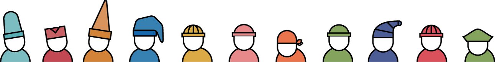

Graphic Designer connecting people to brand
Itlian graphic designer and freelancer based in Cork graduated at Politecnico di Milano and IUAV University of Venice with honors in 2015. My research is manly focused on branding and digital project. The goal of my last projects like Nadir and Liber Liber is to define the brand’s soul and connect people to it through interactive environments or digital products mixing UX and UI desing. On this website I share my best works, happy surfing!
Download my CV /
Contact me